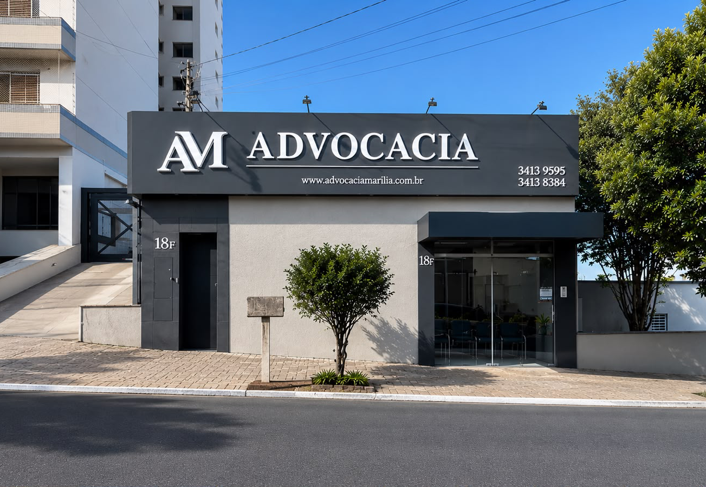

Planejamento previdenciário: como garantir uma aposentadoria segura
Entenda a importância de planejar a sua aposentadoria com antecedência, analisando as regras de transição e calculando o melhor momento para o requerimento.
Ler artigo completoReunimos profissionais experientes e especializados de forma autônoma e independente. Prestamos assessoria técnica e personalizada para encontrar as melhores soluções.
Há quase quatro décadas, este espaço jurídico reúne advogados que exercem a advocacia de forma autônoma e independente, compartilhando uma mesma estrutura, sólidos princípios éticos e o compromisso com a excelência na prestação dos serviços jurídicos.
Desde 1986, a tradição construída por profissionais experientes consolidou um ambiente pautado pela confiança, pelo respeito às pessoas e pela busca das melhores soluções para cada cliente. Com atuação em diversas áreas do Direito, os advogados que aqui desenvolvem suas atividades oferecem atendimento especializado, sempre preservando a autonomia profissional e a individualidade de cada relação.
Mais do que compartilhar um espaço de trabalho, compartilhamos valores. Acreditamos que a cooperação, a ética, o aperfeiçoamento constante e o atendimento humanizado fortalecem nossa atuação e refletem diretamente na qualidade dos serviços prestados.
Início das atividades advocatícias na Avenida Carlos Gomes, em Marília/SP, plantando as bases da nossa tradição.
Mudança para a sede própria na Avenida Gonçalves Dias, nº 18, Centro, proporcionando infraestrutura moderna e acolhedora.
Um espaço consolidado que reúne advogados independentes especialistas, prestando serviços com ética, sigilo e rigor técnico.
Profissionais altamente qualificados que atuam com total independência técnica e ética profissional.
Direito Civil, Trabalhista e Imobiliário (Locações)
Direito Previdenciário, Cível, do Trabalho e Consumidor
Direito Penal, Execução Penal, Família e Contratos
Direito Civil, Administrativo e Previdenciário

Direito de Família, Sucessões, Civil e Imobiliário
Direito Criminal, Execução Penal, Previdenciário e Família
Direito Previdenciário (Administrativo e Judicial)
Direito de Família e Direito Civil
Direito Previdenciário (RGPS e RPPS)
Direito Trabalhista, Penal, Eleitoral, Civil e Previdenciário
Direito Imobiliário, Agrário, Inventários e Sucessões
Prestar serviços jurídicos com excelência técnica, ética e comprometimento, oferecendo soluções personalizadas e seguras para cada cliente, sempre pautados pelo respeito, pela transparência e pela responsabilidade profissional.
Consolidar um ambiente jurídico de referência pela qualidade técnica, pela confiança e pela atuação especializada de profissionais comprometidos com a constante evolução do Direito e com a excelência no atendimento.
Nossos advogados atuam de forma ampla e especializada, garantindo um acompanhamento minucioso em diversas vertentes do Direito.
Atuação abrangente em conflitos cíveis, incluindo Ações de Alimentos, Execuções de Título, Sucessões, Inventários e partilhas, Cobranças de débitos e responsabilidade civil em geral.
Assessoria jurídica em negócios imobiliários, elaboração e revisão de contratos de compra, venda e locação, regularização fundiária de imóveis e ações de proteção da posse.
Defesa dos interesses dos trabalhadores e consultoria preventiva para empresas, com foco em cumprimento das obrigações legais e redução de litígios jurídicos.
Orientação detalhada e planejamento previdenciário, encaminhamento de aposentadorias por idade, tempo de contribuição e invalidez, concessão de benefícios assistenciais (BPC/LOAS), pensão por morte, revisões de benefícios e recursos administrativos e judiciais junto ao INSS.
Assessoria em licitações e contratos com a administração pública, defesa em processos administrativos disciplinares (PAD), regularização de pendências junto a órgãos públicos e representação perante órgãos reguladores e tribunais de contas nas esferas municipal, estadual e federal.
Realizamos um atendimento humanizado e exclusivo para ouvir sua história e compreender as nuances técnicas e pessoais da sua demanda jurídica.
Estudamos minuciosamente o cenário com base na legislação e jurisprudência atuais, construindo uma estratégia robusta, segura e transparente.
Conduzimos as medidas judiciais ou extrajudiciais com total rigor técnico, garantindo atualizações frequentes e um canal direto de comunicação com você.
Cada pessoa que chega até aqui traz uma história única, e é por ela que o atendimento começa. Você é recebido com escuta atenta, linguagem clara e o tempo necessário para compreender o seu caso, sem pressa e sem juridiquês.
Nossos advogados preservam a individualidade de cada relação: o mesmo profissional acompanha você do primeiro contato à conclusão, com ética, sigilo e cooperação constante entre as especialidades do escritório.
Presença nas reuniões, retorno claro e acompanhamento próximo: do primeiro contato à conclusão do seu caso.
Um espaço planejado para recebê-lo com privacidade e conforto, na Avenida Gonçalves Dias, bem no Centro. Como a via tem grande movimento, contamos com estacionamento próprio no local, garantindo uma visita sem contratempos.

Entenda a importância de planejar a sua aposentadoria com antecedência, analisando as regras de transição e calculando o melhor momento para o requerimento.
Ler artigo completoSaiba como realizar a partilha de bens de forma ágil através de cartório de notas, economizando tempo e evitando o desgaste de um processo judicial demorado.
Ler artigo completoDescubra as principais cláusulas que devem ser revisadas por um advogado de confiança para prevenir fraudes, atrasos e dores de cabeça futuras.
Ler artigo completoO escritório funciona como um espaço de cooperação jurídica compartilhada. Cada advogado exerce suas atividades com total autonomia profissional, independência técnica e sigilo. Isso garante atendimento personalizado e especializado, ao mesmo tempo em que permite a cooperação entre os profissionais quando a complexidade do caso exige.
O agendamento pode ser feito de forma simples pelo telefone fixo (14) 3413 8384 ou clicando nos botões de CTA ("Falar com um Advogado") espalhados pelo site, que direcionam para o nosso atendimento digital. Realizamos atendimentos presenciais na nossa sede e também consultas remotas por videoconferência.
Para a primeira reunião de avaliação, sugerimos trazer seus documentos pessoais (RG, CPF e comprovante de endereço) e toda a documentação que esteja diretamente relacionada ao seu caso (por exemplo: contratos, notificações, carteira de trabalho, certidões de nascimento/óbito, decisões judiciais anteriores, etc.).
Estamos estabelecidos em sede própria na Avenida Gonçalves Dias, 18, Centro - Marília, SP (próximo à região central). Nossa estrutura física foi planejada para garantir total acessibilidade, conforto e absoluta privacidade durante os atendimentos.
Nossos especialistas estão à disposição para analisar o seu caso com sigilo absoluto, ética e dedicação técnica.